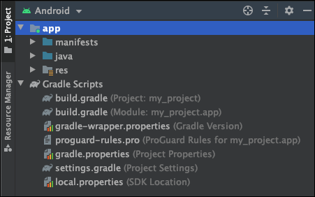
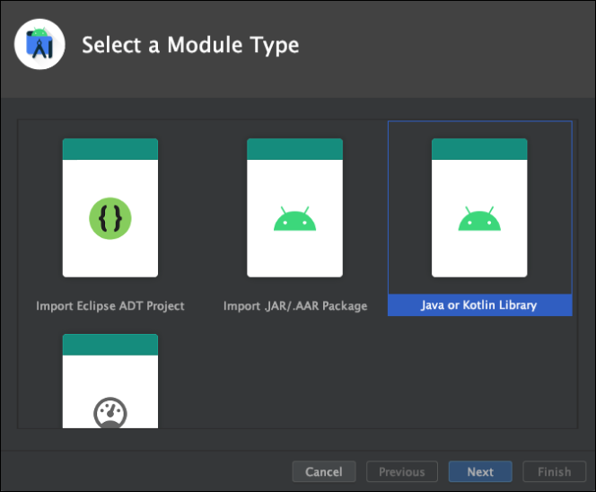
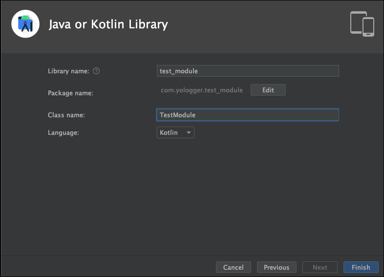
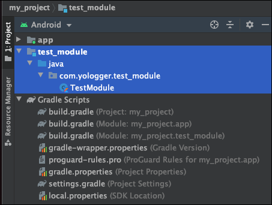
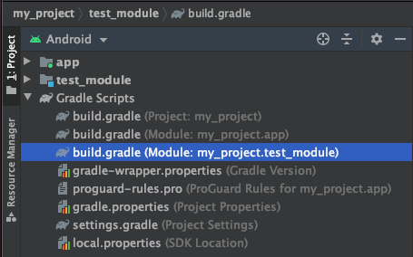

[Android] Gradle - (2) 모듈(Module)
모듈
Android Developers에서는 모듈(Module)을 다음과 같이 정의하고 있습니다.
프로젝트와 모듈을 직접 만들어보면서 모듈이 무엇인지 알아보겠습니다.
모듈 생성하기
안드로이드 스튜디오 프로젝트를 생성하면 app이라는 모듈이 자동으로 생성됩니다.

이제 새로운 모듈을 추가해보겠습니다. Android Studio > File > New > New Module을 선택하면 다양한 모듈을 선택할 수 있습니다. 일단 Java or Kotlin Module을 선택합시다.

모듈의 이름은 test_module입니다.

새로운 모듈 test_module이 추가된 것을 확인할 수 있습니다.

모듈 test_module에 대한 build.gradle파일이 별도로 생성되었다는 것에 주목합시다.

모듈 test_module에 TestModule클래스를 다음과 같이 작성합니다.
1 | package com.yologger.test_module |
모듈 사용하기
이제 app모듈에서 test_module모듈 의 TestModule클래스를 사용하겠습니다. 우선 app모듈의 build.gradle파일에 의존성을 추가해야합니다.
- groovy
1 | dependencies { |
이제 app모듈에서 TestModule클래스를 사용할 수 있습니다.
1 | package com.yologger.my_project |
멀티 모듈의 장점
위 예제처럼 하나의 프로젝트에서 여러 개의 모듈을 사용하는 것을 멀티 모듈이라고 합니다.
각 모듈은 자신만의 build.gradle을 가지고 있습니다. 이는 각 모듈 단위로 빌드할 수 있다는 뜻입니다. 이를 통해 빌드 시간을 단축시킬 수 있습니다. 또한 기능별로 코드를 분리하여 중복을 제거하고 재사용성을 높일 수 있습니다. 뿐만 아니라 모듈 단위로 테스트를 할 수도 있어 테스트 용이성이 높아집니다.
모듈의 종류
자주 사용하는 모듈은 크게 세 가지입니다.
(1) Phone & Tablet Module
Phone & Tablet Module Module을 빌드하면 안드로이드 운영체제에서 실행 가능한 APK(Android Application Package)파일이 생성됩니다. 똑같은 앱을 스마트폰, 태플릿 용도로 나누어 출시한다던가 유료 앱, 무료 앱을 구분하여 출시할 때 사용할 수 있습니다. 프로젝트를 생성하면 기본으로 생성되는 app모듈이 바로 Phone & Tablet Module Module입니다.
Phone & Tablet Module Module의 build.gradle을 보면 다음과 같은 플러그인을 적용하고 있습니다.
1 | plugins { |
(2) Android Library
안드로이드 프레임워크와 관련된 모듈입니다. AppCompatActivity클래스, Context클래스처럼 안드로이드 프레임워크에서만 제공하는 API에 접근할 수 있습니다. 빌드의 결과로 AAR(Android Archieve) 파일이 생성됩니다.
Android Library의 build.gradle을 보면 다음과 같은 플러그인을 적용하고 있습니다.
1 | plugins { |
(3) Java or Kotlin Library
순수하게 자바 또는 코틀린으로 이루어진 모듈입니다. 안드로이드 프레임워크와는 독립적이며, 빌드 결과로 JAR(Java Archive)파일이 생성됩니다.
Java or Kotlin Library의 build.gradle을 보면 다음과 같은 플러그인을 적용하고 있습니다.
1 | plugins { |